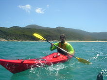
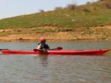
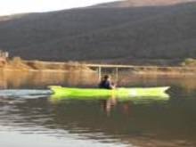

FACTS
Kayaking is the use of a kayak for moving across water. It is distinguished from canoeing by the sitting position of the paddler and the number of blades on the paddle. A kayak is a low-to-the-water, canoe-like boat in which the paddler sits facing forward, legs in front, using a double-bladed paddle to pull front-to-back on one side and then the other in rotation. Most kayaks have closed decks, although sit-on-top and inflatable kayaks are growing in popularity as well.The best places for kayaking in Kosova are Batllava and Badofci lake.
Types of Kayaks
Sit on top kayaks place the paddler in an open, shallowly-concave deck above the water level. Cockpit style involves sitting with the legs and hips inside the kayak hull with a spray deck or spray skirt that creates a water-resistant seal around the waist. Inflatables are a hybrid of the two previous configurations; these boats have an open deck, but the paddler sits below the level of the deck. Tandems are configured for multiple paddlers, in contrast to the single person designs featured by most kayaks. Tandems can be used by two or even three paddlers.
Activities involving kayaks
Because of their range and adaptability, kayaks can be useful for other outdoor activities such as diving, fishing, wilderness exploration and search and rescue during floods.
Kayak Diving
Kayak diving is a type of recreational diving where the divers paddle to a diving site in a kayak carrying all their gear to the place they want to dive. The range can be up to several kilometres along the coastline from the launching point to a place where access would be difficult from the shore, although the sea is sheltered. It is a considerably cheaper alternative to using a powered boat, as well as combining the experience of sea kayaking at the same time. Kayak diving gives the diver independence from dive boat operators, while allowing dives at sites which are too far to comfortably swim, but are sufficiently sheltered.
|  |  |  |
Ecotourism
Ecotourism based on kayak trips is gaining in popularity. In warm-water vacation destinations such as Sarasota Keys, guided kayak trips take kayakers on a tour of the local ecosystem. Kayakers can watch dolphins breach and manatees eat sea grass, in shallow bay water.
Kayak fishing
Kayak fishing is fishing from a kayak. The kayak has long been a means of transportation and a stealth means of approaching easily spooked fish, such as cobia and flounder. Kayak fishing has gained popularity in recent times due to its broad appeal as an environmentally friendly and healthy method of transportation, as well as its relatively low cost of entry compared to motorized boats.